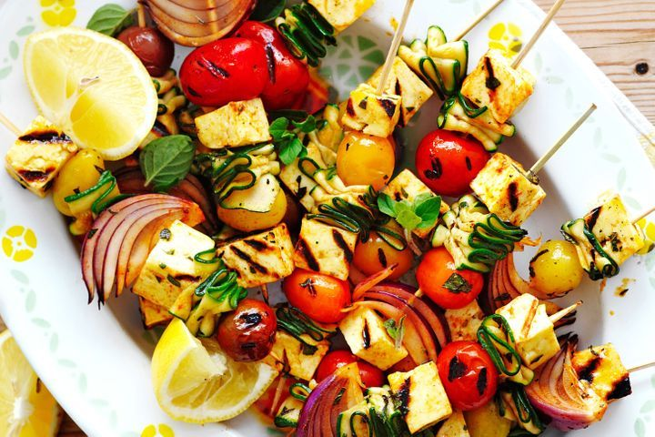
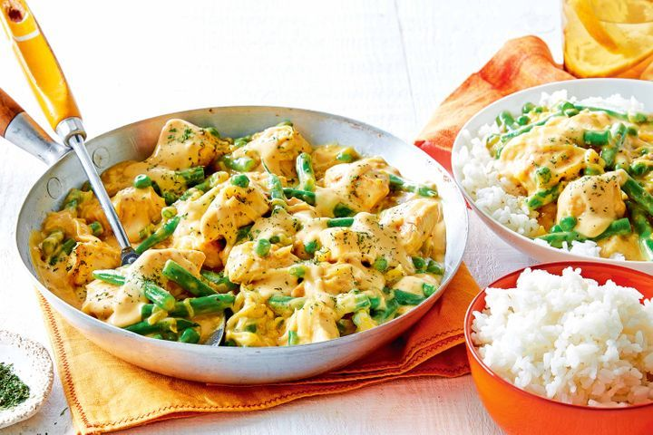
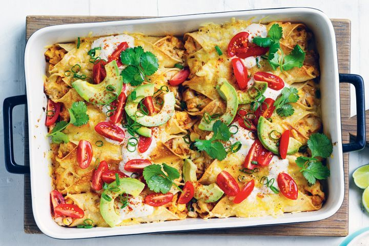
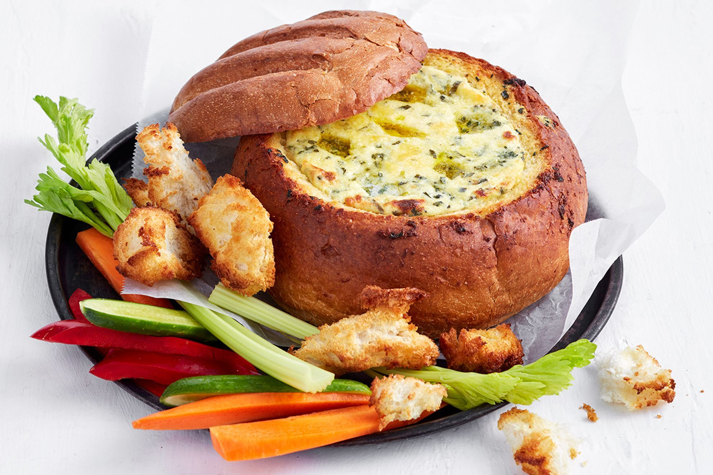

| Picture: | Name: | Flavour Profile: | Rating: |
|---|---|---|---|
|  | Bbq, halloumi and vegetable kebabs. | Flavour profile: Spicy, umami, savoury. | Rating |
|  | Honey mustard chicken and vegetables with rice. | Flavour profile: Sweet, salty, savoury. | Rating |
|  | Creamy chicken enchiladas. | Flavour profile: Spicy, salty, umami. | Rating: |
|  | Garlic bread cob loaf dip.: | Salty, savoury, tangy. | Rating: |